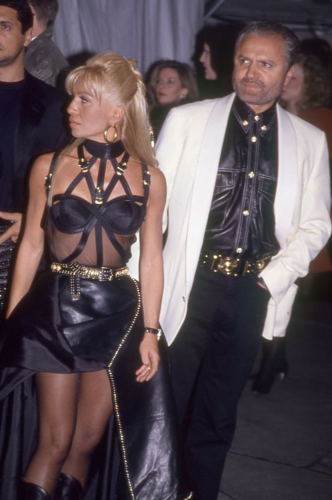
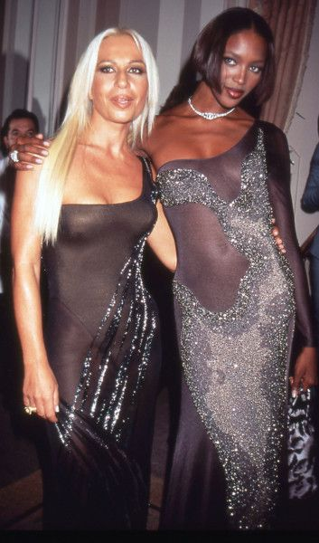

Prendas

En 1993 cuando los hermanos Versace se unieron para crear un vestido que pasaría a la historia de la moda y cambiaría para siempre el rumbo de la firma italiana. vestido negro con corsé en la parte superior y una falda asimétrica, conectados por un cinturón dorado que refuerza la cintura de avispa, pero esta solo es la base. El modelo se encuentra repleto de cintas negras con remates dorados que rodean su cuello y lo conectan con el resto del vestido. Un vestido de inspiración bondage que se denominó “vestido de esclavitud”.
Un estilo caracterizado por las prendas que realzan la figura, pero aportándole elementos más extravagantes para elevar cualquier aspecto a uno futurista. Un estilo al que le ha adherido las mezclas que más le gustaban a su hermano Gianni Versace, quien adoraba el color, los accesorios brillantes o estampados con detalles urbanos y excéntricos; además de saber mezclar perfectamente materiales y texturas, desde el cuero, pasando por la seda, el metal o la malla. Algo que Donatella aprendió y que desde que falleció, quiso incorporar también en sus colecciones.

Vestidas de dorado, recordando a aquellos vestidos con las que las convirtió en iconos Gianni Versace, Donatella las ha elevado a diosas una vez más. Para terminar el desfile, han recorrido la pasarela cogidas de la mano como hicieron en 1991 cuando cantaron Freedom de George Michael mientras desfilaban. Él también ha estado en Milán. Su Freedom, otro eslabón más del romance entre Versace y las modelos, ha sonado mientras las supermodelos y Donatella han recordado aquel día.